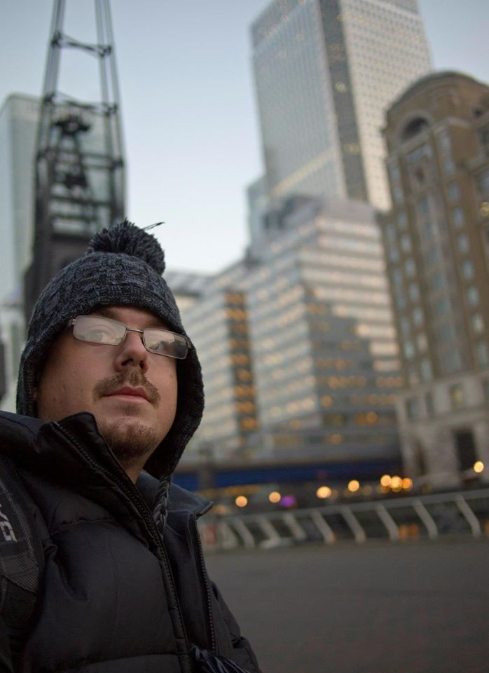

About Me
My name is Sean Bevard, I work full-time as a Software Engineer and I am a freelance Web Developer in my free time. Although I was born in Baltimore, MD, I've called Central Florida home now for over 20 years.
My favorite sport is soccer, which I have played and watched enthusiastically since I was about 6 (although these days, it's more watching and less playing). I've been an Orlando City SC season ticket holder since 2013, but I also still follow the Ravens and Orioles from my hometown.